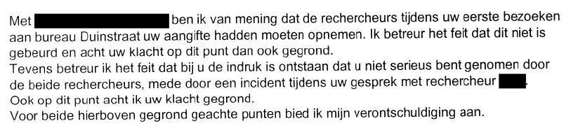

Prueba · Carta
Jefe de distrito de la policía a Giltay, 26 de marzo de 2000
El pasaje
«Al igual que […], considero que los investigadores deberían haberle tomado la denuncia durante sus primeras visitas a la comisaría de la Duinstraat. Lamento que no haya sido así y, por ello, considero fundada su queja en este punto. Lamento asimismo que usted haya tenido la impresión de que los dos investigadores no lo tomaron en serio, debido en parte a un incidente ocurrido durante su conversación con el investigador […]. También en este punto considero fundada su queja. Por los dos puntos considerados fundados más arriba, le presento mis disculpas». Página 1, el párrafo en el que se declara fundada la queja. Traducido del neerlandés; el texto original figura a continuación.
Texto original
“Met […] ben ik van mening dat de rechercheurs tijdens uw eerste bezoeken aan bureau Duinstraat uw aangifte hadden moeten opnemen. Ik betreur het feit dat dit niet is gebeurd en acht uw klacht op dit punt dan ook gegrond. Tevens betreur ik het feit dat bij u de indruk is ontstaan dat u niet serieus bent genomen door de beide rechercheurs, mede door een incident tijdens uw gesprek met rechercheur […]. Ook op dit punt acht ik uw klacht gegrond. Voor beide hierboven gegrond geachte punten bied ik mijn verontschuldiging aan.” Los dos […] sustituyen a dos nombres tachados en el documento. El membrete escribe el nombre del jefe de distrito «N.. Laagland»; la firma, «N. Laagland».

Por qué importa este documento
Cuando Giltay, por consejo del abogado Gerard Spong, quiso presentar una denuncia en julio de 1999, la policía de La Haya se negó a tomársela, según el libro (edición inglesa, p. 66). En esta carta, el jefe de distrito reconoce que los investigadores deberían haberle tomado la denuncia y que Giltay se había quedado con la impresión de que no lo habían tomado en serio. El jefe de distrito considera fundada la queja en ambos puntos y presenta sus disculpas. Solo después de esto, en junio de 2000, la policía de La Haya tomó la denuncia por difamación y calumnia.
Procedencia
- Documento
- Carta de resolución de una queja sobre la actuación policial
- Remitente
- N. Laagland, jefe del distrito II (Segbroek, Haagse Hout, Scheveningen), Policía de Haaglanden, La Haya
- Destinatario
- E.F. Giltay
- Fecha
- 26 de marzo de 2000
- Referencia
- 99Ro15395 del 2 de septiembre de 1999
- Asunto
- «Afhandeling klacht politieoptreden» (tramitación de una queja sobre la actuación policial)
- Referencias
- Carta de Giltay del 21 de julio de 1999
- Idioma
- Neerlandés
- Véase también
- Denuncia ante la policía de La Haya, 12 de junio de 2000
Citado en: el ensayo «La prohibición cayó, el libro quedó en pie» en el capítulo (3) «Lo que revela el libro: el encubrimiento en torno a Srebrenica».
Ficha de prueba: https://
Documento: https://
Modificado por última vez el 13 de septiembre de 2026, consultado el 26 de noviembre de 2026.

Esta página es una ficha de prueba del libro El general del encubrimiento de Edwin Giltay y del sitio web que lo acompaña.